Öğrenme Hedefleri
- Bilgisayar tarihindeki altı dönüşümü gerekçeleriyle açıklamak.
- Von Neumann modelinde komut ve veri akışını çizmek.
- CPU, GPU, RAM ve depolamanın işlevlerini ayırmak.
- Port biçimi ile iletişim protokolünü ayırt etmek.
- Marka, ISA ve mimari yaklaşım arasındaki farkı açıklamak.
- PC ve MCU sistemlerini ortak bilgi işleme modeliyle karşılaştırmak.
Temel Kavramlar
Bir kartı açın: İngilizce adını öğrenin, nasıl çalıştığını keşfedin ve gerçek bir sistemdeki görevini inceleyin.
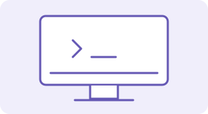
BilgisayarComputerVeriyi komutlara göre işler ve anlamlı sonuç üretir.İncele
Nasıl çalışır?
Girişten alınan veri bir programdaki komutlara göre işlenir. Bellek ara sonuçları tutar; depolama kalıcı kayıt, çıkış birimleri ise kullanıcı veya fiziksel dünya ile etkileşim sağlar.
Gerçek sistemde
Sıcaklık sensörünün değerini okuyup fanı çalıştıran MCU da bir bilgi işleme sistemidir.
Karıştırma: Bilgisayar yalnızca ekranı ve klavyesi olan masaüstü cihaz değildir.
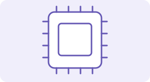
CPU · Merkezi İşlem BirimiCentral Processing UnitProgram komutlarını yürütür; hesaplamayı ve kontrol akışını yönetir.İncele
Nasıl çalışır?
Komutları bellekten getirir, çözer ve yürütür. Çekirdek, register ve önbellek gibi yapılar bu işin parçalarıdır. Bir CPU birden fazla çekirdek içerebilir.
Gerçek sistemde
Sensör değeri 28 °C üstündeyse uyarı gösterme kararını bir program aracılığıyla yürütür.
Karıştırma: GHz tek başına performans ölçüsü değildir; mimari, iş yükü ve bellek erişimi de önemlidir.
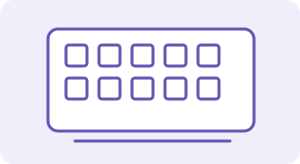
GPU · Grafik İşlem BirimiGraphics Processing UnitÇok sayıda benzer işlemi paralel yürütmede uzmanlaşır.İncele
Nasıl çalışır?
Grafik oluşturma, görüntü işleme ve matris hesapları gibi uygun iş yüklerinde çok sayıda işlem birimi birlikte çalışır. GPU işlemci paketine bütünleşik veya ayrı bir kart üzerinde olabilir.
Gerçek sistemde
Bir görüntünün çok sayıda pikseline aynı filtreyi uygulamak veya bir yapay zekâ modelinin matris işlemlerini yürütmek.
Karıştırma: GPU yalnızca oyun için değildir. GPU yongası ile ekran kartının tamamı aynı şey değildir.
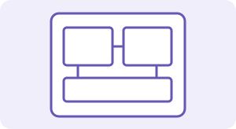
MCU · MikrodenetleyiciMicrocontroller UnitCPU çekirdeğini, belleği ve çevre birimlerini tek yongada buluşturur.İncele
Nasıl çalışır?
GPIO, zamanlayıcı ve bazı modellerde ADC gibi birimlerle fiziksel giriş/çıkışları kontrol eder. SRAM çalışma verilerini, Flash ise programı saklayabilir; özellikler modele bağlıdır.
Gerçek sistemde
ESP32 tabanlı bir düğüm sıcaklığı ölçer, Wi-Fi üzerinden iletir ve uygun sürücü devresiyle fanı kontrol eder.
Karıştırma: MCU, CPU’nun rakibi olan bir parça değildir; içinde CPU çekirdeği bulunan bütünleşik sistemdir.
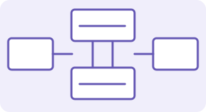
Von Neumann MimarisiVon Neumann ArchitectureKomut ve veriyi ortak bellek modelinde düşünür.İncele
Nasıl çalışır?
İşlemci komutları ve verileri bellekten alır. Ortak iletişim kaynakları veri akışını sınırlayabilir; bu durum Von Neumann darboğazı olarak anılır. Modern tasarımlar ayrı komut/veri önbellekleri gibi karma çözümler içerir.
Gerçek sistemde
Bellekteki iki ölçümü al, topla ve sonucu belleğe yaz: program ve veriler aynı temel model içinde ele alınır.
Karıştırma: Bu bir mimari modeldir; her modern bilgisayarın fiziksel bağlantılarını eksiksiz tarif etmez.
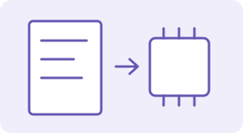
ISA · Komut Kümesi MimarisiInstruction Set ArchitectureYazılımın işlemciyle konuştuğu mimari sözleşmedir.İncele
Nasıl çalışır?
Komutları, programcıya görünen register’ları ve işlem davranışlarını tanımlar. x86-64 (x64), Arm ve RISC-V mimari aileleridir. RISC: Reduced Instruction Set Computer; CISC: Complex Instruction Set Computer tasarım yaklaşımlarını adlandırır.
Gerçek sistemde
Intel ve AMD’nin birçok masaüstü işlemcisi x86-64; Apple Silicon, Arm ISA kullanır. Aynı ISA farklı mikro mimarilerle uygulanabilir.
Karıştırma: Intel ve AMD şirket; Apple Silicon ürün ailesidir. ISA, marka veya doğrudan bir hız sıralaması değildir.
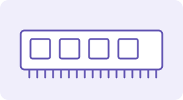
RAM · Çalışma BelleğiRandom Access MemoryÇalışan programların geçici verilerini tutar.İncele
Nasıl çalışır?
CPU’nun ihtiyaç duyduğu program parçaları ve ara sonuçlar çalışma belleğinde tutulur. Bilgisayarlardaki tipik RAM uçucudur: enerji kesildiğinde içeriği korunmaz.
Gerçek sistemde
Açık bir raporda yaptığınız son değişiklik RAM’de olabilir; dosyayı kaydetmeden kapanırsa bu değişiklik kaybolabilir.
Karıştırma: RAM kapasitesi depolama kapasitesi değildir. Daha fazla RAM, SSD’deki boş alanı artırmaz.
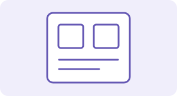
ROM ve FlashRead-Only Memory / Flash MemoryGüç kesildiğinde de saklanması gereken bilgiler için kalıcı bellek.İncele
Nasıl çalışır?
Klasik ROM normal kullanımda yalnızca okunur. Flash elektrikle silinip yeniden yazılabilen kalıcı bellek teknolojisidir. Modern firmware çoğunlukla güncellenebilir Flash üzerinde tutulur.
Gerçek sistemde
MCU’nun ölçüm programı Flash’ta kalır; cihaz yeniden açıldığında program tekrar çalıştırılır.
Karıştırma: ROM ile Flash tam eş anlamlı değildir. Firmware bir yazılımdır; Flash onu saklayabilen donanımdır.
SSD · Katı Hâl SürücüsüSolid-State DriveDosyaları hareketli mekanik parça olmadan saklar.İncele
Nasıl çalışır?
Çoğunlukla NAND Flash ve bir denetleyici kullanır. İşletim sistemi, uygulama ve ölçüm dosyaları güç kesildiğinde korunur. Kapasite, gecikme ve aktarım hızı ayrı özelliklerdir.
Gerçek sistemde
Bir dönem boyunca toplanan ölçüm CSV dosyalarını ve proje kodunu depolar.
Karıştırma: Her SSD NVMe değildir; SATA üzerinden çalışan SSD’ler de vardır.
HDD · Sabit Disk SürücüsüHard Disk DriveVeriyi dönen manyetik plakalar üzerinde saklar.İncele
Nasıl çalışır?
Okuma/yazma kafası uygun konuma hareket eder. Mekanik arama ve dönme beklemesi, erişim gecikmesine katkıda bulunur. Disk kapasitesi ile RAM miktarı birbirinden bağımsızdır.
Gerçek sistemde
Büyük bir ölçüm arşivinin kalıcı olarak tutulmasında kullanılabilir; bağımsız yedek yine gerekir.
Karıştırma: Kalıcı depolama, verinin asla kaybolmayacağı anlamına gelmez; donanım arızaları mümkündür.
NVMe · Depolama ProtokolüNon-Volatile Memory ExpressYüksek hızlı kalıcı depolama için tasarlanmış iletişim protokolü.İncele
Nasıl çalışır?
Yaygın yerel kullanımda PCIe üzerinden SSD’ye erişim sağlar. M.2 fiziksel biçim ve bağlantı standardı ailesidir; protokolü tek başına belirlemez.
Gerçek sistemde
Bir M.2 SSD satın alırken anakart yuvasının PCIe/NVMe veya SATA desteğini kontrol edersiniz.
Karıştırma: NVMe bellek yongası türü değildir. M.2 görünümündeki her sürücü NVMe kullanmaz.
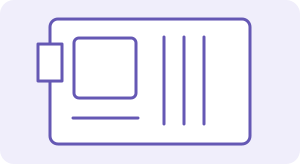
AnakartMotherboard / MainboardBileşenlerin bağlandığı ana devre kartıdır.İncele
Nasıl çalışır?
İşlemci, RAM, depolama ve çevre birimleri arasındaki elektriksel bağlantıları ve genişleme olanaklarını sağlar. Soket, bellek türü ve bağlantı desteği uyumluluğu belirler.
Gerçek sistemde
Bir RAM modülünü seçerken yalnızca kapasitesine değil anakartın desteklediği bellek türüne de bakarsınız.
Karıştırma: Fiziksel olarak benzeyen her bağlantı veya parça elektriksel olarak uyumlu değildir.
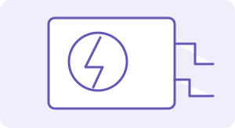
PSU · Güç KaynağıPower Supply UnitBileşenlere uygun ve düzenlenmiş elektrik enerjisi sağlar.İncele
Nasıl çalışır?
Masaüstü güç kaynağı şebekeden gelen AC enerjiyi gerekli DC çıkışlara dönüştürür. Güç kapasitesi, bağlantılar, verim ve yük gereksinimi birlikte değerlendirilir.
Gerçek sistemde
CPU ve GPU yük altında daha fazla güç isteyebilir; sistemin güç ve soğutma tasarımı buna uygun olmalıdır.
Karıştırma: Güç kaynağının watt değeri bilgisayarın her an aynı gücü tükettiği anlamına gelmez. Güç kaynağını açmadan etiketini inceleyin.
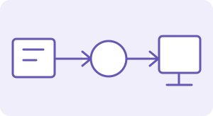
Giriş / Çıkış · I/OInput / OutputBilgisayarın kullanıcı ve fiziksel dünya ile iletişimidir.İncele
Nasıl çalışır?
Klavye, mikrofon ve sensör giriş; ekran, hoparlör ve aktüatör çıkış sağlar. ADC (Analog-to-Digital Converter) analog bir sinyali sayısal değere çevirir. Dijital sensörde bu dönüşüm sensörün içinde olabilir.
Gerçek sistemde
Sensör → ADC → MCU → fan sürücüsü: veri girişi, işleme ve fiziksel çıktı aynı sistemde birleşir.
Karıştırma: Dokunmatik ekran hem giriş hem çıkıştır. MCU pini güçlü bir motoru genellikle doğrudan süremez; uygun sürücü gerekir.
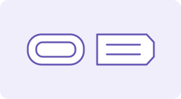
USB ve USB-CUniversal Serial Bus / USB Type-CUSB iletişim standardı ailesi; USB-C bir konektör biçimidir.İncele
Nasıl çalışır?
USB çevre birimleriyle veri iletişimi ve uygun koşullarda güç aktarımı sağlar. USB-C ile görüntü, veri ve şarj özellikleri cihaz, port ve kablonun desteklerine bağlıdır.
Gerçek sistemde
Aynı görünen iki USB-C kablosundan biri yalnızca sınırlı veri ve şarj, diğeri ek görüntü özellikleri destekleyebilir.
Karıştırma: Konektör şekli aynıysa hız ve yetenek de aynıdır sonucu çıkarılamaz.
Görüntü, Ağ ve GenişlemeHDMI / DisplayPort / Ethernet / PCIeHer bağlantı, farklı veri akışı ve kullanım amacı için tasarlanır.İncele
Nasıl çalışır?
HDMI: High-Definition Multimedia Interface ve DisplayPort dijital görüntü/ses taşır. Ethernet yerel ağ iletişimidir. PCIe: Peripheral Component Interconnect Express, GPU ve NVMe gibi bileşenleri bağlar. Thunderbolt bir bağlantı teknolojisi adıdır; USB-C üzerinden sunulan özellikleri sürüme ve cihaza bağlıdır.
Gerçek sistemde
Monitör görüntü bağlantısına, yerel ağ Ethernet’e, ayrı ekran kartı çoğunlukla PCIe’ye bağlanır.
Karıştırma: Fiziksel port ile ağdaki TCP/UDP port numarası farklı kavramlardır. DisplayPort, Ethernet ve Thunderbolt kısaltma açılımı değildir.
Görseller kavramsal çizimlerdir; belirli bir ürünün fotoğrafı veya ölçekli devre şeması değildir.
CPU ve GPU: aynı iş, farklı yaklaşım
CPU (Central Processing Unit) genel amaçlı kontrol ve hesaplama için; GPU (Graphics Processing Unit) çok sayıda benzer işlemi paralel yürütmek için tasarlanır.
12 bağımsız piksele aynı işlemi uyguladığınızı düşünün. Aşağıdaki modelde bir akış adım başına 1, diğer düzen 4 piksel işler.
Tek akışlı yaklaşım
0 / 12 piksel
Paralel yaklaşım
0 / 12 piksel
Bu görsel bir paralellik modelidir, performans testi değildir. CPU da çok çekirdek ve vektör komutlarıyla paralel çalışabilir. GPU her görevde daha hızlı değildir; veri aktarımı, bağımlılıklar ve yazılım sonucu etkiler.
RAM mi, depolama mı?
RAM çalışma masanız, SSD kayıtlı dosyaların durduğu dolabınız gibi düşünülebilir. Önce değeri değiştirin; kaydetmeden ve kaydettikten sonra güç kesintisini deneyin.
Başlangıç: dosyadan RAM’e 24 °C yüklendi.
Yalnızca sayfa içi simülasyon. Cihazınızın gücünü, belleğini veya dosyalarını değiştirmez. Yeniden açma adımı dosyanın RAM’e tekrar yüklenmesini temsil eder; otomatik kayıt varsayılmaz.
Bilgisayarların Tarihi · Etkileşimli Zaman Çizgisi
Dişlilerden yarı iletkenlere, oda büyüklüğündeki makinelerden cebimizdeki bilgisayara. Çizgi üzerindeki bir tarihi seçerek keşfedin.
Yatay çizgiyi kaydırın · Tarihler kronolojiktir; aralıklar zaman ölçeğinde değildir.

Abaküs: hesabı görünür kılmak
Boncuk ve çubuklar sayıları temsil eder; işlemleri insan yürütür. Hesaplama araçlarının kökleri, elektronik bilgisayarlardan çok daha eskidir.
Ne değişti? Bilgiyi fiziksel bir düzenle temsil etmek.
Computer History Museum · Calculators ↗
Pascaline: dişlilerle hesap
Blaise Pascal’ın mekanik hesaplayıcısı, toplama ve basamak taşıma işlemlerini dişli ve taşıma mekanizmalarıyla gerçekleştirir. Belirli bir işi yapan mekanizma henüz genel amaçlı bilgisayar değildir.
Ne değişti? İnsan emeğinin bir bölümünü mekanizmaya aktarmak.
Computer History Museum · Mechanical calculators ↗Babbage: programlanabilir makine fikri
Charles Babbage’ın Analitik Makine tasarımı, işlem birimi ve bellek içeren genel amaçlı bir mekanik bilgisayar düşüncesini geliştirir. Tasarım kendi döneminde tamamlanmaz.
Ne değişti? Tek bir hesabı yapan araçtan farklı komutları yürüten sisteme.
Computer History Museum · Babbage’s engines ↗
Ada Lovelace: makine için işlem dizisi
Lovelace, Analitik Makine üzerine notlarında Bernoulli sayıları için bir işlem dizisi yayımlar. Makinelerin yalnızca sayıları değil, kurallarla temsil edilen başka sembolleri de işleyebileceğini tartışır.
Ne değişti? Donanımdan ayrı olarak algoritmayı düşünmek.
Computer History Museum · Ada Lovelace ↗
ENIAC: vakum tüpleri çağı
ENIAC kamuya tanıtılır. Yaklaşık 18.000 vakum tüpü kullanan sistem, elektronik hesaplamanın hızını gösterir; büyük alan, güç ve bakım gereksinimleri taşır.
Ne değişti? Mekanik hareketten elektronik anahtarlamaya geçiş.
Computer History Museum · 1946 ↗
Transistör devrimi
Bell Labs’te John Bardeen ve Walter Brattain çalışan nokta temaslı transistörü geliştirir. William Shockley’nin de yer aldığı araştırmalar, yarı iletken elektroniğin yolunu açar.
Ne değişti? Tüplerin yerini zamanla alabilecek küçük, düşük güçlü ve bütünleştirilebilir elektronik yapıların başlangıcı.
Computer History Museum · Transistörün icadı ↗
Transistör bilgisayara giriyor
Manchester Üniversitesi’nin deneysel transistörlü bilgisayarı çalışır. İlk sistemler karma bileşenler de içerir; 1947’deki icadın bilgisayarlara yayılması yıllar alır.
Ne değişti? Bir bileşenin icadı ile sistemlerde yaygın kullanımı aynı tarih değildir.
Computer History Museum · Transistorized computers ↗
Entegre devre: tek yüzeyde çok eleman
Jack Kilby 1958’de çalışan entegre devresini gösterir. Robert Noyce’un 1959’daki monolitik devre yaklaşımı, çok sayıda elemanın birlikte üretilmesinin önünü açar.
Ne değişti? Ayrı ayrı bağlanan transistörlerden yonga üzerinde bütünleşmeye.
Computer History Museum · The Integrated Circuit ↗Mikroişlemci: CPU bir yongada
Intel 4004 ticari olarak sunulur. İşlemci işlevlerinin tek yongada toplanması, küçük sistemlerin tasarımını ve üretimini kolaylaştırır.
Ne değişti? Bilgisayarın temel işlem birimini daha erişilebilir kılmak.
Computer History Museum · 1971 ↗
Kişisel bilgisayar dönemi
Apple II gibi 1977 bilgisayarları ve 1981 IBM PC, kişisel bilgisayar ekosisteminin önemli dönüm noktalarıdır. Bilgisayarlar ev, okul ve ofislerde daha geniş kitlelere ulaşır.
Ne değişti? Merkezî hesaplama kaynaklarından bireysel kullanıma.
IBM · Personal computer ↗
Web: bilgisayarlar arasında belgeler
Tim Berners-Lee 1989’da CERN’de Web’i önerir; ilk sunucu ve tarayıcı 1990’da gelişir, proje 1991’de daha geniş çevrelere açılır. Web, İnternet altyapısı üzerinde çalışır.
Ne değişti? Bağlantılı belgelerden küresel bilgi paylaşımına.
CERN · The birth of the Web ↗
Bilgisayar cebimize taşınıyor
iPhone’un tanıtımı, çoklu dokunmatik arayüz ve mobil Web’in görünür dönüm noktalarından biridir. Akıllı telefonların tarihi daha eskidir; gelişim tek bir ürünle başlamaz.
Ne değişti? İşlemci, ekran, sensör ve ağın taşınabilir bir sistemde birleşmesi.
Apple · 2007 iPhone tanıtımı ↗Raspberry Pi: üretmek için bilgisayar
Raspberry Pi satışa sunulur. Eğitim ve deney odaklı tek kart bilgisayarlar, yazılımı fiziksel giriş/çıkışlarla buluşturan projeleri daha erişilebilir hale getirir.
Ne değişti? Bilgisayarı yalnızca kullanmak değil, onunla sistem geliştirmek.
Raspberry Pi · İlk çıkış ↗
Bulut, IoT ve yapay zekâ
Hesaplama veri merkezleri, kişisel cihazlar ve sensör düğümleri arasında dağılır. CPU, GPU ve NPU farklı iş yüklerini paylaşır; yapay zekâ çıkarımı bulutta veya uç cihazda yapılabilir.
Ne değişti? 1947’deki temel fikir bugün milyarlarca transistör içeren yongalarda sürüyor. Bu durak tek bir icat tarihini değil, güncel dönemi özetler.
Computer History Museum · The Silicon Engine ↗1947 neden bir kırılma noktası?
Elektron akışını vakum içinde kontrol eder. Isıtılan katot, yüksek ısı ve büyük fiziksel yapılar sistem tasarımını sınırlar.
Akımı yarı iletkende kontrol eder. Küçülme ve düşük güçlü devreler için yol açar; entegrasyonla aynı yongada çok sayıda eleman üretilebilir.
Geçiş bir gecede olmadı: 1947 icat → 1950’ler transistörlü bilgisayarlar → 1958–1959 entegre devre → 1971 mikroişlemci. Tüpler özel uygulamalarda kullanılmaya devam eder.
Ders İçeriği · Mekanik hesaplamadan programa
Abaküs gibi araçlar hesaplamayı insana yardımcı olacak biçimde düzenledi. Dişli tabanlı mekanik hesaplayıcılar toplama ve taşıma işlemlerini fiziksel hareketle gerçekleştirdi. Charles Babbage’ın 19. yüzyıldaki Analitik Makine tasarımı, bellek ve işlem birimi olan programlanabilir genel amaçlı makine fikrini geliştirdi; makine kendi döneminde tamamlanmadı.
Ada Lovelace, Analitik Makine üzerine notlarında Bernoulli sayıları için bir işlem dizisi anlattı ve makinenin sayılar dışındaki sembolleri de işleyebileceğini tartıştı. Burada önemli ayrım, belirli bir hesabı yapan mekanizma ile farklı algoritmalar için programlanabilen sistemdir.
Elektronik bilgisayarın dönüm noktaları
1940’larda geliştirilen ve 1946’da kamuya tanıtılan ENIAC, vakum tüpleriyle çalışan büyük ölçekli elektronik bir genel amaçlı bilgisayardı; ilk programlama süreci kablo ve anahtar düzenlemelerine dayanıyordu. “İlk bilgisayar” ifadesi elektronik, programlanabilir ve genel amaçlı gibi ölçütlere göre değişir.
1947’de gösterilen transistör, anahtarlama ve yükseltmeyi küçük yarı iletken yapılarla sağladı. 1950’lerin sonundaki entegre devreler birden fazla elemanı aynı yongada topladı. Mikroişlemci, CPU işlevlerini bir yonga üzerinde birleştirerek 1970’lerde daha küçük ve erişilebilir sistemlerin önünü açtı.
Kişisel, bağlı ve mobil bilgisayarlar
1970–1980’lerde kişisel bilgisayarlar bireysel yazılım kullanımını yaygınlaştırdı. Grafik arayüzler etkileşim maliyetini azalttı. İnternet, paket anahtarlamalı ağların birbirine bağlanmasıyla gelişti; Web ise bu altyapıyı kullanan bağlantılı belge ve uygulama sistemidir. İkisi aynı şey değildir.
Dizüstü bilgisayarlar, akıllı telefonlar ve tek kart bilgisayarlar enerji, boyut ve bağlantıyı tasarımın merkezine taşıdı. Bugünkü bilgisayar sistemleri masaüstünden veri merkezine ve bir motor sürücüsündeki MCU’ya kadar uzanır. Performans tek başına saat frekansıyla değil iş yükü, mimari, bellek ve güç sınırlarıyla değerlendirilir.
Modern bilgisayar mimarisi ve anakart
Von Neumann modelinde CPU komutu bellekten getirir, çözer ve yürütür. Veri ve komut trafiğinin aynı kaynakları paylaşması darboğaz oluşturabilir. Modern işlemciler ayrı komut/veri önbellekleri gibi karma düzenler kullanır; basit model fiziksel tasarımın tüm ayrıntısı değildir.
Anakart işlemci, RAM, depolama ve çevre birimleri arasındaki elektriksel bağlantıları sağlar. CPU kontrol akışını ve genel hesaplamayı yürütür; GPU görüntü işleme yanında paralel sayısal hesaplarda kullanılır. Güç kaynağı şebekeden gelen enerjiyi bileşenlerin gerektirdiği DC gerilimlere dönüştürür. Güç, soğutma ve bağlantı uyumluluğu birlikte değerlendirilmelidir.
RAM, ROM, SSD, HDD ve NVMe
RAM uçucu çalışma belleğidir; açık uygulamanın verileri burada tutulur. ROM kalıcı bellek kavramıdır; modern sistemlerin firmware’i sıklıkla güncellenebilir Flash üzerinde saklanır. HDD dönen manyetik plakalar ve hareketli kafa kullanır; SSD hareketli mekanik parça olmadan Flash bellek kullanır.
NVMe bir disk boyutu veya Flash türü değil, çoğunlukla PCIe üzerinden çalışan depolama protokolüdür. M.2 fiziksel biçim/bağlantı standardı ailesidir; her M.2 aygıt NVMe değildir. Kapasite, gecikme, aktarım hızı ve dayanıklılık ayrı ölçütlerdir. Daha fazla RAM depolama kapasitesini artırmaz.
Giriş, çıkış ve bağlantı noktaları
Klavye, fare, mikrofon ve sensör giriş; ekran, hoparlör ve aktüatör çıkış birimleridir. Dokunmatik ekran hem giriş hem çıkış sağlar. USB çevre birimi veri iletişimini ve belirli koşullarda güç aktarımını destekler. USB-C konektör biçimidir; her USB-C portu aynı hız, görüntü veya şarj yeteneğine sahip değildir.
HDMI ve DisplayPort dijital görüntü/ses taşır. Thunderbolt, sürüme ve aygıta bağlı olarak veri, görüntü ve güç özelliklerini bir bağlantıda birleştirir. Ethernet yerel ağ iletişiminde kullanılır; PCIe ise GPU ve NVMe gibi aygıtların yüksek hızlı dahili bağlantısıdır. Uygun kablo seçimi için konektör görünümünü değil iki uçtaki desteklenen özellikleri kontrol edin.
Intel, AMD, ARM ve Apple Silicon
Intel ve AMD işlemci üreten şirketlerdir; x86 bir komut kümesi ailesidir. x64 yaygın kullanımda x86-64’ü ifade eder. Arm hem şirketi hem mimari ailesi bağlamında kullanılır. Apple Silicon, Apple’ın Arm komut kümesini kullanan SoC ailesidir. Marka, ISA ve fiziksel ürün birbirinden ayrılmalıdır.
RISC ve CISC, komut kümesi tasarım yaklaşımlarını anlatır. “RISC her zaman daha hızlıdır” veya “CISC daima daha fazla enerji harcar” sonucu çıkarılamaz. Modern uygulamalarda mikro mimari, üretim süreci, derleyici ve iş yükü belirleyicidir. Aynı ISA’yı kullanan iki işlemci farklı performans gösterebilir.
Karşılaştırma
| Platform | İşleme / bellek | Tipik kullanım |
|---|---|---|
| PC | Genellikle x86-64 CPU, RAM, SSD; başka ISA’lar da mümkündür | Genel amaçlı masaüstü ve mühendislik yazılımı |
| MacBook | Modele göre Intel veya Apple Silicon; RAM ve SSD | Taşınabilir genel amaçlı bilgisayar |
| Raspberry Pi | Modeline göre Arm SoC; RAM ve microSD/diğer depolama | Tek kart bilgisayar; Pico ailesi MCU’dur |
| Arduino Uno R3 | ATmega328P MCU; SRAM ve Flash | Basit gerçek zamanlı giriş/çıkış; diğer Arduino modelleri farklıdır |
| ESP32 | Modele göre Xtensa veya RISC-V MCU; SRAM ve Flash | Kablosuz gömülü uygulamalar |
Sistem Mimarisi
Bellek ve depolama tek yönlü zorunlu duraklar değildir. ADC analog sinyali sayısallaştırır; dijital sensörlerde bu dönüşüm sensör içinde olabilir.
Gerçek Dünya Örneği
Bir sıcaklık kontrol sisteminde sensör ölçüm üretir, MCU eşikle karşılaştırır ve fanı sürer. Bilgisayarda klavye yerine sensör, ekran yanında aktüatör bulunur; aynı bilgi işleme modeli geçerlidir.
Uygulama
- Kendi bilgisayarınızın CPU, RAM, depolama ve portlarını sistem bilgilerinden belirleyin.
- Bir ESP32 geliştirme kartının tam modelini seçip veri sayfasından çekirdek, RAM ve Flash bilgilerini bulun.
- Girdi–işleme–bellek–depolama–çıktı modelini iki sistem için çizin.
# Sistem incelemesi
| Bileşen | Model / kapasite | Görevi | Kaynak |
|---|---|---|---|
| CPU | Kendi cihazınızı yazın | Komut yürütme | Sistem bilgisi |
| RAM | Ölçüp doldurun | Geçici çalışma alanı | Sistem bilgisi |Yapay Zekâ ile Çalışma
Bir PC ve ESP32 tabanlı sıcaklık ölçüm sistemini girdi, işlemci, bellek, depolama ve çıktı açısından karşılaştır. Marka ile komut kümesini ayır. Kart modeline bağlı bilgileri varsayım olarak işaretle; doğrulamak için gereken veri sayfası başlıklarını öner.Doğrulama kontrolü
- Üretilen açıklamayı aşağıdaki resmî/teknik kaynakla karşılaştırın.
- Örneği çalıştırıp beklenen ve gözlenen sonucu kaydedin; bir sınır durumunu deneyin.
- Varsayımları, birimleri ve olası hataları açıklayın; anlamadığınız satırı teslim etmeyin.
Kendini Test Et
1. İnternet ile Web aynı şey midir?
Hayır. İnternet ağ altyapısıdır; Web bu altyapıda HTTP gibi protokollerle çalışan bir hizmettir.
2. RAM neden SSD yerine geçmez?
RAM uçucudur ve çalışma alanıdır; SSD kalıcı depolamadır.
3. USB-C hızlı veri aktarımını garanti eder mi?
Hayır. Konektör biçimi, desteklenen USB sürümü ve ek protokolleri garanti etmez.
4. NVMe ile M.2 farkı nedir?
NVMe bir protokoldür; M.2 fiziksel biçim ve bağlantı standardıdır.
5. ADC ne işe yarar?
Analog sinyali örnekleyip sayısal değerlere dönüştürür; ölçüm çözünürlüğü ve örnekleme hızı önemlidir.
Haftalık Çalışma
PC, MacBook, Raspberry Pi, Arduino ve ESP32 için kaynaklı bir karşılaştırma raporu hazırlayın. Donanım modellerini açıkça yazın.
- Çalışmayı kendi repository’nizde hafta01 klasörüne ekleyin.
- En az 3 anlamlı commit: ilk çözüm, doğrulama/düzeltme, açıklama ve sonuç.
- README içinde yaklaşımı, test sonucunu, kaynakları ve kullandığınız önemli AI promptlarını belirtin.
- Teslim kontrolü: çalışan örnek, anlaşılır açıklama ve öğrenme sürecini gösteren commit geçmişi.
Kaynaklar ve İleri Okuma
Arayüz adları ve ürün özellikleri değişebilir; uygulama öncesi resmî belgeleri kontrol edin.
İlerleme yalnızca bu tarayıcıda saklanır; notlandırma amacı taşımaz.